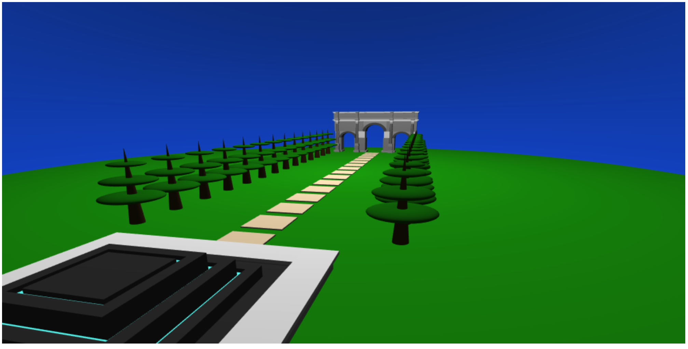
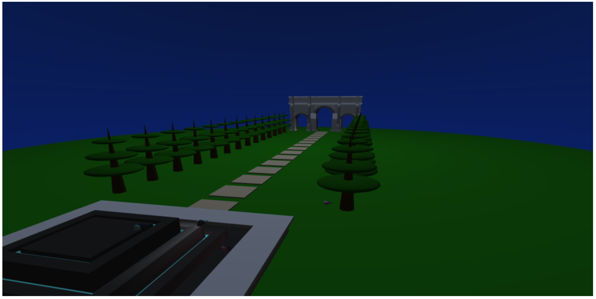
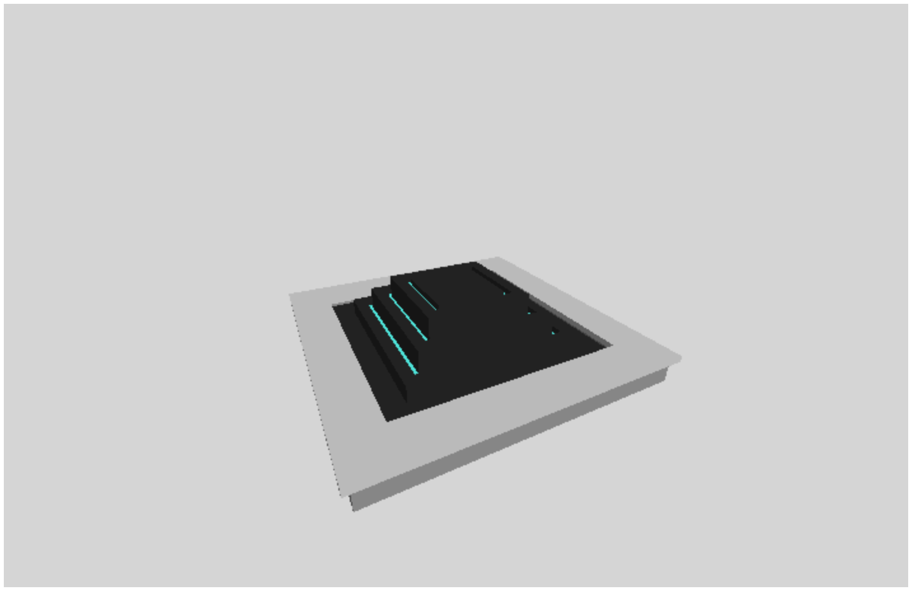
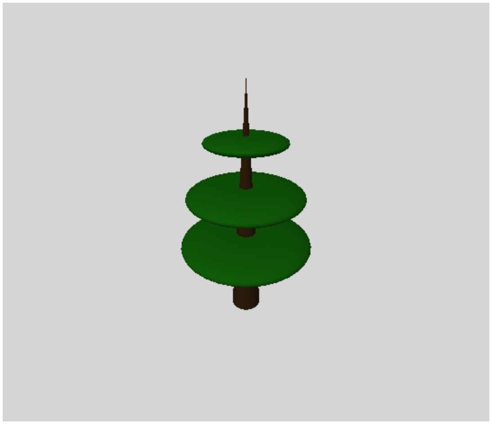
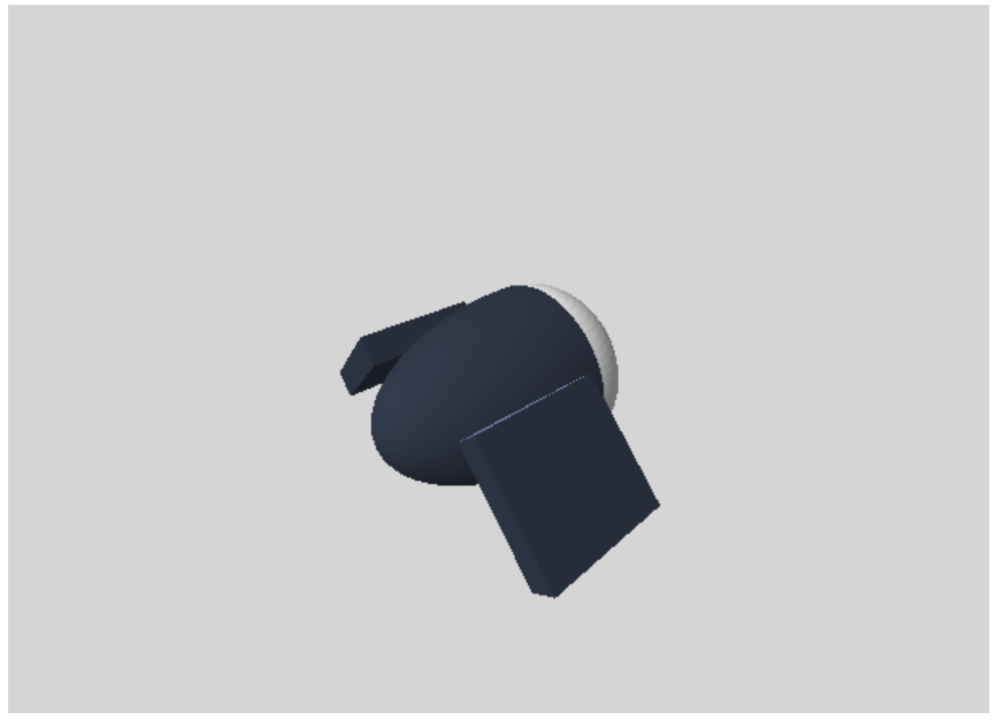
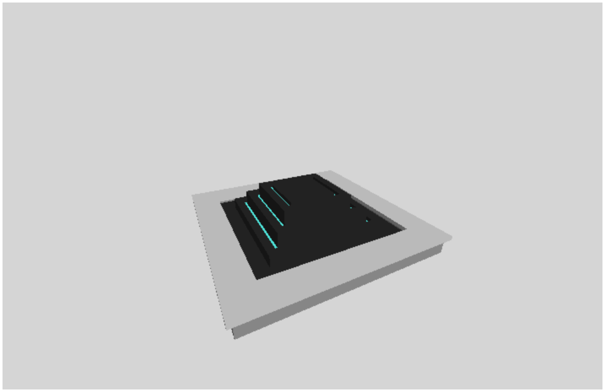
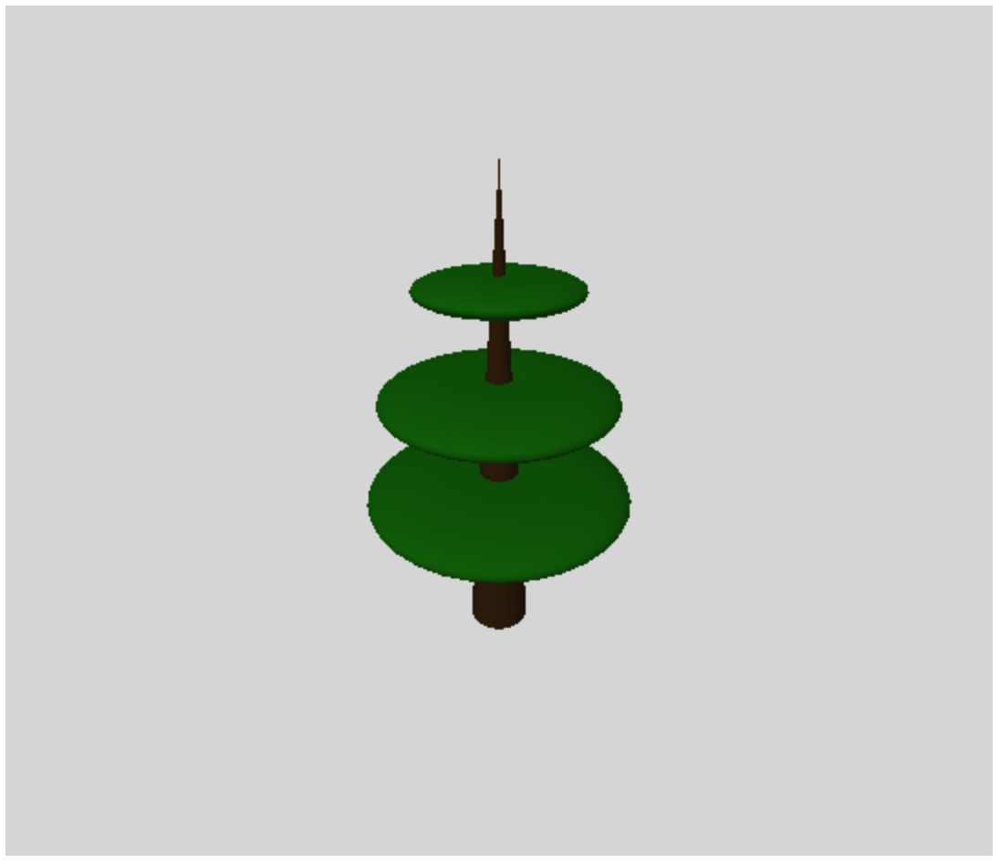
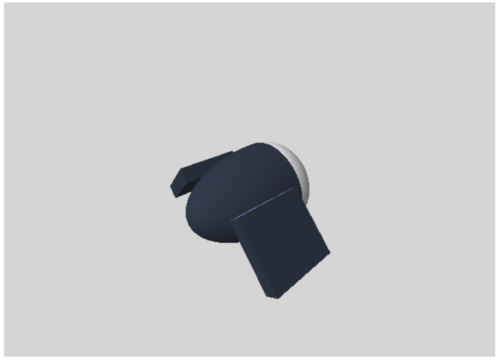

Scenic Arch of Constantine by Sarah Yan
General Description:
From this demo here. I have created a scene containing the arch of Constantine, a fountain, some fancy trees, some tile flooring, and some animated fire flies.
 You can toggle to see day time or night time. For the day time scene, there are no fireflies and it is just a bright day. For the night time scene. there are fireflies and they are flying around, some casting light on to the other modeled figures.
Components in Scene:
 





The arch of Constantine can be seen here where you can change the camera angle. The arch itself is just placed in the background of this project. I plan on having more fireflies revolving around the arch (and in the scene in generally). The fountain is made out of boxgeometry meshes. I modularized it by making a function that creates one layer of the fountain. Then, after tree layers, I created a base frame (also made out of boxgeometry meshes). Originally, I wanted to animate water from the water fountain, but I settled on just animating the fireflies. I plan on adding a rectangle light source on the fountain, but I have not gotten to that yet. The fancy tree is made from a cone and 3 flattened torus geometry meshes. The firefly is made from 2 half sphere that are scaled accordingly, two box geometry mesh wings, and a light source at the lighter half sphere. The current firefly does not flap its wings, I hope to animate that for my final version.
Future Implementations:
I hope to put in more fireflies in the scene, have the camera circulate the scene, have the fireflies flap its wings, and the fountain to have a rectangular light source in the cyan sliver. I will see if I will get to these tasks.